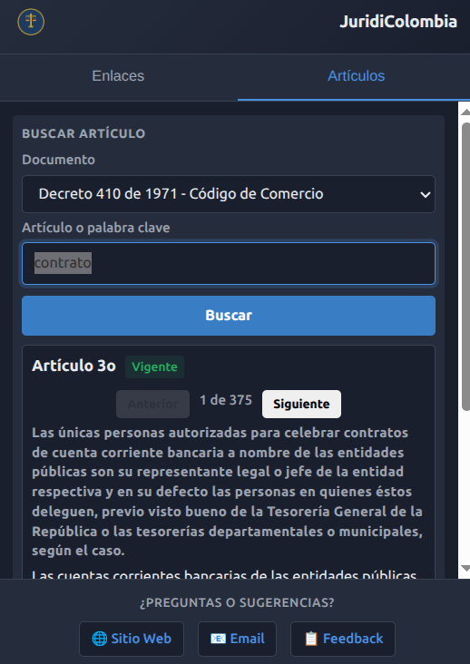

Número o palabra clave
Encuentra un artículo conocido directamente, o busca por término y navega todos los resultados.
JuridiColombia ayuda a profesionales legales a consultar referencias colombianas por número de artículo o palabra clave, sin enviar el flujo principal de búsqueda a un servidor.
El producto es intencionalmente concreto: buscar, leer, navegar, abrir fuentes oficiales y guardar enlaces útiles.
Encuentra un artículo conocido directamente, o busca por término y navega todos los resultados.
Los datos legales principales están disponibles en la extensión, reduciendo dependencia de portales públicos lentos.
Los usuarios pueden guardar sus propias páginas legales con Chrome Storage sin enviarlas a un backend.
La extensión empieza con tres referencias legales colombianas de alto uso y mantiene las fuentes oficiales cerca del flujo de búsqueda.
Ley 84 de 1873. Busca por número de artículo, concepto o término legal recurrente.
Decreto 410 de 1971. Útil para consulta comercial y acceso rápido a fuente oficial.
Ley 1564 de 2012. Disponible desde la misma interfaz de búsqueda y flujo de fuente oficial.
La extensión está optimizada para búsqueda rápida y lectura clara de artículos legales.
Búsqueda rápida por número de artículo o palabra clave. Resultados ordenados por relevancia desde referencias embebidas.

Acceso instantáneo al contenido completo. Navega entre resultados y abre la fuente oficial con un clic.
JuridiColombia mantiene el flujo principal local: referencias embebidas, almacenamiento del navegador y enlaces a fuentes oficiales.
| Dimensión | JuridiColombia | Alternativas típicas |
|---|---|---|
| Consulta principal offline | Sí | Normalmente no |
| Enlaces guardados localmente | Sí | Depende |
| Flujo enfocado en navegador | Sí | Fragmentado |
| Acceso a fuente oficial | Incluido | Manual |
Este repositorio está pensado para credibilidad, roadmap, screenshots, issues y contacto.